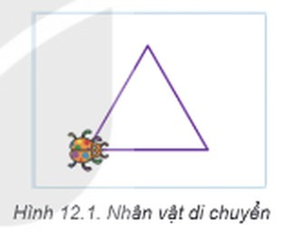
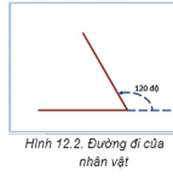
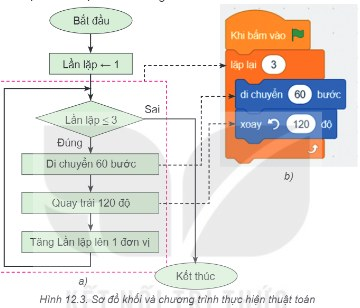
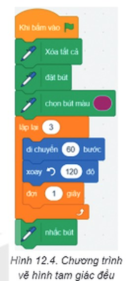
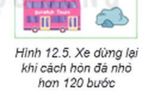
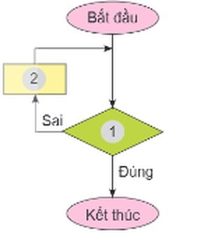

Dành cho giáo viên
Theo dõi lớp
| Học sinh / Nhóm | Đã nộp | Cập nhật |
|---|
Bước 1
1 Khởi động
Khám phá Hình ảnh khởi động
Trò chuyện Cùng An, Minh và Khoa
Đoạn trò chuyện gợi mở (không có trong SGK)
Khoa: Tớ muốn lập trình cho chú mèo trong Scratch đi thành hình tam giác đều.
Minh: Kéo khối lệnh vào thử luôn đi!
An: Khoan đã! Phải nghĩ thuật toán trước: đi bao nhiêu bước, quay bao nhiêu độ?
Minh: Kéo khối lệnh vào thử luôn đi!
An: Khoan đã! Phải nghĩ thuật toán trước: đi bao nhiêu bước, quay bao nhiêu độ?
Khởi động Điều khiển nhân vật di chuyển
Bằng ngôn ngữ lập trình trực quan, bạn Khoa muốn tạo chương trình điều khiển nhân vật di chuyển theo đường đi là các hình như: tam giác đều, vuông,… Theo em, bạn Khoa cần thực hiện những công việc gì?

Ghi bài Khởi động
Sau khi thầy cô chốt, em chép nội dung dưới đây vào vở.
Bước 2 · Hình thành kiến thức mới
2.1 Từ thuật toán đến chương trình
Hoạt động 1 Mô tả kịch bản dưới dạng thuật toán
Với trường hợp nhân vật di chuyển theo đường đi là một tam giác đều, em hãy: 1. Xác định góc quay của nhân vật khi đi hết một cạnh. 2. Liệt kê lần lượt các bước của thuật toán điều khiển nhân vật (bằng ngôn ngữ tự nhiên).

Đọc hiểu Từ sơ đồ khối đến chương trình
Đọc mục 1 (SGK trang 73–74). Tam giác đều là hình có ba cạnh bằng nhau, ba góc bằng nhau và bằng 60 độ. Để di chuyển theo một hình tam giác đều, nhân vật cần lặp lại ba lần việc thực hiện hai hành động sau: di chuyển về phía trước một số bước bằng độ dài cạnh tam giác (ví dụ, di chuyển 60 bước); quay trái 120 độ. Thuật toán sử dụng cấu trúc tuần tự và cấu trúc lặp, trong đó số bước lặp bằng 3 (bằng số cạnh của tam giác đều). Khi thực hiện đủ ba lần thì vòng lặp kết thúc. Kịch bản chương trình được mô tả bằng sơ đồ khối của thuật toán như minh hoạ ở Hình 12.3a.
Em đã biết, để mô tả thuật toán, ngoài cách liệt kê các bước bằng ngôn ngữ tự nhiên hoặc dùng sơ đồ khối, chúng ta có thể viết chương trình để máy tính “hiểu” và thực hiện được thuật toán. Để điều khiển nhân vật trên máy tính thực hiện thuật toán được mô tả bằng sơ đồ khối ở Hình 12.3a, em viết chương trình Scratch như Hình 12.3b, trong đó mỗi bước của thuật toán mô tả ở sơ đồ khối đã được thực hiện bằng lệnh tương ứng của ngôn ngữ lập trình Scratch. Như vậy, chương trình là dãy lệnh điều khiển máy tính thực hiện một thuật toán.
Em đã biết, để mô tả thuật toán, ngoài cách liệt kê các bước bằng ngôn ngữ tự nhiên hoặc dùng sơ đồ khối, chúng ta có thể viết chương trình để máy tính “hiểu” và thực hiện được thuật toán. Để điều khiển nhân vật trên máy tính thực hiện thuật toán được mô tả bằng sơ đồ khối ở Hình 12.3a, em viết chương trình Scratch như Hình 12.3b, trong đó mỗi bước của thuật toán mô tả ở sơ đồ khối đã được thực hiện bằng lệnh tương ứng của ngôn ngữ lập trình Scratch. Như vậy, chương trình là dãy lệnh điều khiển máy tính thực hiện một thuật toán.

Chạy thử chương trình Hình 12.3b trên mô phỏng (đã bật Chạy chậm để thấy nhân vật đi và lệnh đang chạy được tô sáng). Sơ đồ khối bên phải được vẽ tự động từ chương trình: thử đổi số 3 hoặc 120 rồi quan sát sơ đồ.
Câu hỏi SGK trang 74
Bạn An muốn bổ sung lệnh đợi 1 giây để điều khiển nhân vật dừng lại 1 giây sau khi đi hết mỗi cạnh của tam giác. Em hãy bổ sung lệnh này vào sơ đồ khối mô tả thuật toán và nêu vị trí đặt câu lệnh trong chương trình Scratch tương ứng ở Hình 12.3. (Thử trên mô phỏng: nháy vào vạch ▸ ở vị trí cần chèn rồi bấm khối đợi 1 giây.)
Ghi bài 1. Từ thuật toán đến chương trình
Sau khi thầy cô chốt, em chép nội dung dưới đây vào vở.
Bước 2 · Thực hành
2.2 Thực hành: Tạo chương trình điều khiển máy tính thực hiện thuật toán
Nhiệm vụ 1, 2 Chương trình vẽ tam giác đều
Nhiệm vụ 1: Tạo chương trình điều khiển nhân vật di chuyển theo đường đi là một tam giác đều như minh hoạ trong Hình 12.3. Hướng dẫn (Scratch 3.0, giao diện tiếng Việt): Bước 1. Khởi động phần mềm Scratch, chọn chế độ hiển thị tiếng Việt. Bước 2. Xoá nhân vật chú Mèo, thêm nhân vật chú Bọ rùa. Bước 3. Kéo thả các lệnh để được chương trình như minh hoạ trong Hình 12.3. Bước 4. Nháy chuột vào nút lá cờ xanh để chạy chương trình và xem kết quả.
Nhiệm vụ 2: Thêm một số lệnh để nhân vật vừa di chuyển, vừa vẽ tam giác đều. Hướng dẫn: Bước 1. Nháy chuột vào nhóm lệnh Bút vẽ, kéo thả các lệnh của nhóm này vào chương trình như minh hoạ trong Hình 12.4. Bước 2. Nháy chuột vào nhóm lệnh Điều khiển, kéo thả lệnh đợi 1 giây vào chương trình như minh hoạ trong Hình 12.4. Bước 3. Nháy chuột vào nút lá cờ để chạy chương trình và xem kết quả. Bước 4. Lưu tệp với tên VeHinh.sb3 và thoát khỏi chương trình.
Nhiệm vụ 2: Thêm một số lệnh để nhân vật vừa di chuyển, vừa vẽ tam giác đều. Hướng dẫn: Bước 1. Nháy chuột vào nhóm lệnh Bút vẽ, kéo thả các lệnh của nhóm này vào chương trình như minh hoạ trong Hình 12.4. Bước 2. Nháy chuột vào nhóm lệnh Điều khiển, kéo thả lệnh đợi 1 giây vào chương trình như minh hoạ trong Hình 12.4. Bước 3. Nháy chuột vào nút lá cờ để chạy chương trình và xem kết quả. Bước 4. Lưu tệp với tên VeHinh.sb3 và thoát khỏi chương trình.

Làm trên mô phỏng: bấm khối ở cột bên trái để thêm vào chương trình (thêm lặp lại thì các khối sau sẽ nằm bên trong nó; nháy vạch ▸ để chọn vị trí chèn khác). Bấm vào số trên khối để sửa.
Ghi bài 2. Thực hành
Sau khi thầy cô chốt, em chép nội dung dưới đây vào vở.
Bước 3
3 Luyện tập
Luyện tập Hình vuông và chiếc xe
1. Em hãy mô tả thuật toán bằng sơ đồ khối trong trường hợp đường đi của nhân vật là một hình vuông.
2. Em hãy nâng cấp chương trình VeHinh.sb3 bằng cách bổ sung một nhân vật mới và lập trình để khi nháy chuột vào nhân vật này thì chương trình thực hiện thuật toán vẽ hình vuông.
2. Em hãy nâng cấp chương trình VeHinh.sb3 bằng cách bổ sung một nhân vật mới và lập trình để khi nháy chuột vào nhân vật này thì chương trình thực hiện thuật toán vẽ hình vuông.
Mô phỏng câu 2 (đã có sẵn chương trình vẽ tam giác của Bọ rùa): bấm ＋ Thêm nhân vật, viết chương trình vẽ hình vuông, rồi nháy vào nhân vật đó trên sân khấu để chạy. Bật Sơ đồ khối để xem sơ đồ của câu 1.
3. Bạn Khoa viết kịch bản mô tả hoạt động của xe ô tô chạy trên đường như sau: Khi xe cách hòn đá nhỏ hơn 120 bước, xe sẽ dừng lại (Hình 12.5). a) Em hãy hoàn thành sơ đồ khối theo kịch bản trên bằng cách ghép mỗi lệnh dưới đây với một ô phù hợp được đánh số 1 và 2 trong Hình 12.6: Di chuyển 5 bước; Cách hòn đá < 120 bước? b) Em hãy viết chương trình Scratch thực hiện thuật toán.


Ghi bài Luyện tập
Sau khi thầy cô chốt, em chép nội dung dưới đây vào vở.
Bước 4
4 Vận dụng
Vận dụng Đa giác đều
Trong bài học trên, đường đi của nhân vật là hình tam giác đều. Đường đi đó có thể là hình vuông, lục giác đều,… Khi đó các con số nào trong chương trình ở Hình 12.3 cần phải thay đổi? Thử trên mô phỏng: đổi hai con số để vẽ lục giác đều, ngũ giác đều.
Ghi bài Vận dụng
Sau khi thầy cô chốt, em chép nội dung dưới đây vào vở.